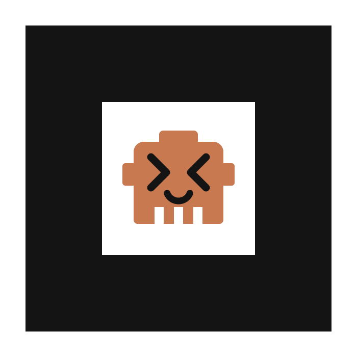

Permite el acceso a la cámara y enfoca el marcador (el robot dentro del marco negro), impreso o mostrado en otra pantalla. El modelo 3D aparecerá sobre él. Arrastra para rotarlo y pellizca para escalarlo.
La realidad aumentada necesita HTTPS y permiso de cámara. Abre esta página desde https://bigkokoz.github.io/gesto/ar/ en Safari o Chrome, y acepta el acceso a la cámara cuando te lo pida.